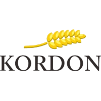

Teknik Pemesinan

Deskripsi
Teknik Mesin merupakan kompetensi keahlian pada rumpun program keahlian teknik mesin bidang keahlian
teknologi rekayasa yang melaksanakan program pendidikan dan pelatihan memproduksi produk-produk
teknik berupa komponen-komponen mesin, komponen otomotif maupun peralatan lainnya menggunakan
mesin-mesin produksi.
Teknik Pemesinan SMK Negeri 1 Subang terbentuk pada tanggal 22 Mei 2015 berdasarkan Surat Keputusan
Kepala Dinas Pendidikan Kabupaten Subang tentang Pemberian Izin Program Kompetensi Keahlian Teknik
Pemesinan SMK Negeri 1 Subang, dengan Nomor SK : 421.2 / 60 – Disdik, Tanggal SK : 22 Mei 2015.
Kompetensi Dasar
- Gambar Teknik Mesin
- Pekerjaan Dasar Teknik Mesin
- Dasar Perancangan Teknik Mesin
- Gambar Teknik Manufaktur
- Teknik Pemesinan Bubut
- Teknik Pemesinan Frais
- Teknik Pemesinan Gerinda
- Teknik Pemesinan NC/CNC dan CAM
- Produk Kreatif dan Kewirausahaan.
Tujuan Pembelajaran
Tujuan Kompetensi Keahlian Teknik Pemesinan secara umum mengacu pada isi Undang-Undang Sistem Pendidikan
Nasional (UU SPN) pasal 3 mengenai Tujuan Pendidikan Nasional dan penjelasan pasal 15 yang menyebutkan
bahwa pendidikan kejuruan merupakan pendidikan menengah yang mempersiapkan peserta didik terutama untuk
bekerja dalam bidang tertentu.
Secara khusus tujuan Kompetensi Keahlian Teknik Pemesinan adalah membekali peserta didik dengan
keterampilan, pengetahuan dan sikap agar kompeten dalam:
- Bekerja baik secara mandiri atau mengisi lowongan pekerjaan yang ada di dunia usaha dan dunia industri
sebagai tenaga kerja tingkat menengah dalam bidang Teknik Pemesinan. - Memilih karir, berkompetisi, dan mengembangkan sikap profesional dalam bidang Teknik Pemesinan.
- Memiliki kompetensi sesuai jenjang dalam bidang Teknik Pemesinan
Tenaga Pengajar Produktif
- Agus Wahyu, S.Pd
- Mas Achmad Yusuf Wibisono, S.T
- Johan Suhendi, S.T
- Isep Rahmanto, S.T
- Hari Suprayoga, S.T
- Keresna Bayu Wijaya K. S.Pd
- Ajat Sutiawan, S.Pd
- Wildan Firmansyah, S.T
Institusi Pasangan
 |
 |
 |  |